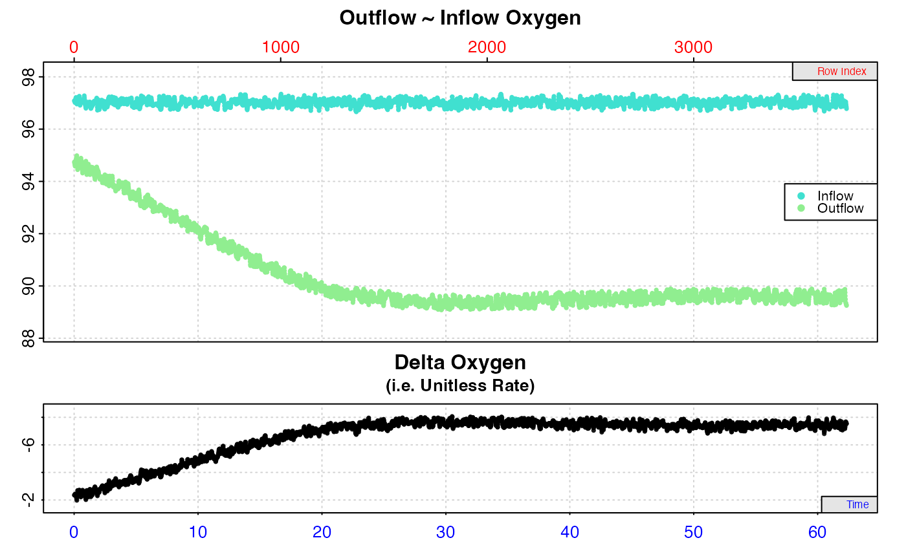
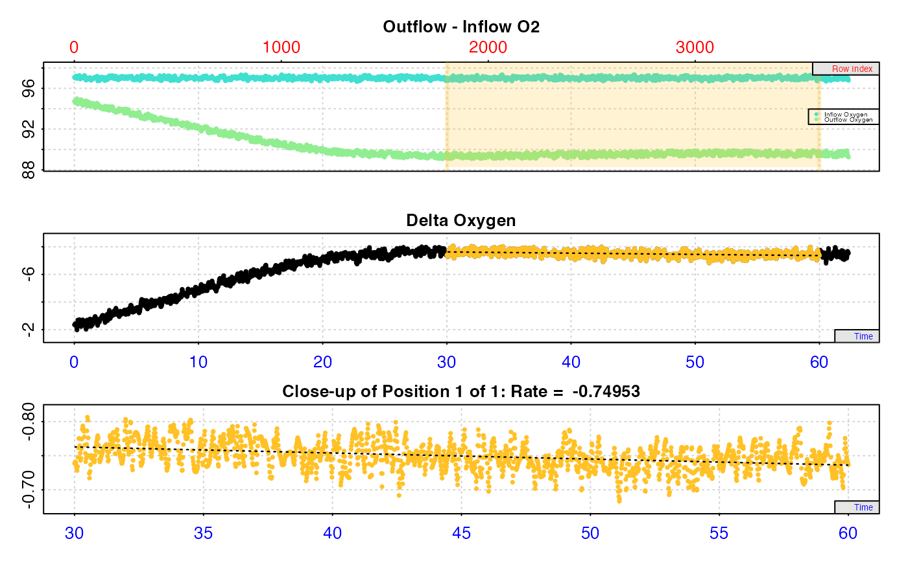

R/convert_rate.ft.R
convert_rate.ft.Rdconvert_rate.ft converts a unitless rate derived from calc_rate.ft() or
adjust_rate.ft() into an absolute rate (i.e. whole specimen or whole
chamber), mass-specific rate (i.e. normalised by specimen mass), or
area-specific rate (i.e. normalised by specimen surface area) in any common
unit. These should be rates calculated as an oxygen delta (inflow minus
outflow oxygen) multiplied by the flowrate.
convert_rate.ft(
x,
oxy.unit = NULL,
flowrate.unit = NULL,
output.unit = NULL,
mass = NULL,
area = NULL,
S = NULL,
t = NULL,
P = 1.013253,
plot = FALSE,
...
)numeric value or vector, or object of class calc_rate.ft() or
adjust_rate.ft(). Contains the rate(s) to be converted.
string. The dissolved oxygen units of the original raw data
used to determine the rate in x.
string. The units of the flowrate through the respirometer. See Details.
string. The output unit to convert the input rate to. Should be in the correct order: "Oxygen/Time" or "Oxygen/Time/Mass" or "Oxygen/Time/Area".
numeric. Mass/weight in kg. This is the mass of the specimen if you wish to calculate mass-specific rates.
numeric. Surface area in m^2. This is the surface area of the specimen if you wish to calculate surface area-specific rates.
numeric. Salinity (ppt). Defaults to NULL. Used in conversion of
some oxygen units. Fresh water should be entered as S = 0.
numeric. Temperature(°C). Defaults to NULL. Used in conversion of some oxygen units.
numeric. Pressure (bar). Used in conversion of some oxygen units. Defaults to a standard value of 1.013253 bar.
logical. Default is FALSE. Controls if a plot is produced. See
Plot section.
Allows additional plotting controls to be passed. See Plot section.
Output is a list object containing the $rate.input, and converted
rate(s) in $rate.output in the $output.unit, as well as inputs and
summary elements. Note, $rate.abs is the absolute rate in the output
unit minus the mass- or area-specific component. The $summary table
element contains all rate parameters and data locations (depending on what
class of object was entered), adjustments (if applied), units, and more.
By default, convert_rate.ft converts the $rate element from
calc_rate.ft objects, or the $rate.adjusted element from adjust_rate.ft
objects if these are entered as the x input. Alternatively, a numeric value
or vector of rates can be input as x.
The oxy.unit of the original raw data used to calculated the rate is
required. Concentration units should use only SI units (L or kg) for the
denominator, e.g. "mg/L", "mmol/kg". Percentage saturation of air or
oxygen is accepted, as are oxygen pressure units. See unit_args() for
details.
An output.unit is also required. If left NULL, The default of "mgO2/h"
is used, or "mgO2/h/kg" or "mgO2/h/m2" if a mass or area respectively
has been entered. The output.unit must be in the sequence Oxygen-Time
(e.g. "mg/h") for absolute rates, Oxygen-Time-Mass (e.g. "mg/h/kg") for
mass-specific rates, and Oxygen-Time-Area (e.g. "mg/h/cm2") for surface
area-specific rates.
Note, some oxygen input or output units require temperature (t) and
salinity (S) to perform conversions. For freshwater experiments, salinity
should be entered as zero (i.e. S = 0).
Strictly speaking the atmospheric pressure (P) should also be supplied. If
not, the default value of 1.013253 bar (standard pressure at sea level) is
used. In most locations which have a normal range (outside extreme weather
events) of around 20 millibars, any variability in pressure will have a
relatively minor effect on dissolved oxygen, and even less on calculated
rates. However, we would encourage users to enter the actual value if they
know it, or use historical weather data to find out what it was on the day.
See unit_args() for details.
The flowrate.unit is required and should be the units of the flowrate
used in calc_rate.ft to calculate the rate, and should be in the form of
volume (L, ml, or ul) per unit time (s,m,h,d), for example in "L/s". Note,
the volume component does NOT represent the volume of the respirometer, and
the time component does NOT represent the units or recording interval of
the original raw data.
The function uses a fuzzy string matching algorithm to accept various unit
formatting styles. For example, "mg/l", "mg/L", "mgL-1", "mg l-1",
"mg.l-1" are all parsed the same. See unit_args() for details of
accepted units and their formatting. See also convert_val() for simple
conversion between non-oxygen units.
Plotting provides three ways of visualising converted rates (or a selection
of them using pos), chosen using type. This is mostly useful only if you
have extracted multiple rates (see calc_rate.ft()). The default is plot = FALSE to prevent plots being produced for every single conversion.
convert_rate.ft objects can only be plotted if and inspect.ft object was
used as the input in calc_rate.ft. In other words, converted rates from
numeric inputs cannot be plotted.
type = "full" (the default) plots a grid of up to 20 plots with each rate
(i.e. region of averaged delta values) highlighted on a plot of delta oxygen
values, with the converted rate value in the title. Values on the axes - time
(bottom), row (top), and oxygen delta (left) - are in the units of the
original raw data. Rates are plotted in order of how they appear in the
summary table up to the first 20 rows, unless different rows have been
specified via pos.
type = "rate" plots the entire data timeseries, that is the outflow and
inflow oxygen (if used) on the upper plot, with delta oxygen on the middle
plot or as the upper plot if delta oxygen values have been entered in
inspect.ft. The lower plot is the output rate values in the chosen output
units. Each rate is plotted against the middle of the region used to
determine it (i.e. region of averaged delta values). pos can be used to
select a range of rates (i.e. summary table rows) to show in the lower plot
(default is all).
type = "overlap" visualises where regression results in the summary table
occur in relation to the original dataset to help understand how they are
distributed or may overlap. The top plot is the entire data timeseries, that
is the outflow and inflow oxygen (if used) on the upper plot, with delta
oxygen on the middle plot or as the upper plot if delta oxygen values have
been entered in inspect.ft. The bottom plot is the region of the data each
rate has been calculated over (i.e. region of averaged delta values). The
y-axis represents the position (i.e. row) of each in the summary table
descending from top to bottom. If no reordering or selection has been
performed, this will usually be equivalent to the $rank column, but note as
reordering or selection is performed rank and summary table position will not
necessarily be equivalent. One result (summary table row) can be highlighted,
the default being highlight = 1. pos can be used to select a range of
summary rows to plot in the lower overlap plot.
Other options:
legend = FALSE will suppress plot labels, pos selects summary rates to
plot, quiet suppresses console messages.
Saved output objects can be used in the generic S3 functions print(),
summary(), and mean().
print(): prints a single result, by default the first converted rate.
Others can be printed by passing the pos input. e.g. print(x, pos = 2)
summary(): prints the output $summary table of converted rates and
metadata. Specific rows can be specified with the pos input. e.g.
summary(x, pos = 1:5). This can be exported as a separate data frame by
passing export = TRUE, and includes all rate parameters, data locations,
adjustments if applied, units, and more. Note, the summary table contains
linear regression coefficients alongside other metadata. These should not be
confused with those in other functions such as calc_rate where slopes
represent rates and coefficients such as a high r-squared are important.
Here, slope represents the stability of the data region, in that the closer
the slope is to zero, the less the delta oxygen values in that region vary,
which is an indication of a region of stable rates. They are included to
enable possible future functionality where stable regions may be
automatically identified, and should generally be ignored. However, advanced
users can use regular R syntax to explore and subset the results using these
if they wish.
mean(): calculates the mean of all converted rates, or those specified by
the pos input. e.g. mean(x, pos = 1:5) The mean can be exported as a
separate value by passing export = TRUE.
For additional help, documentation, vignettes, and more visit the respR
website at https://januarharianto.github.io/respR/
# Convert a single numeric rate to an absolute rate
convert_rate.ft(-0.09, oxy.unit = 'mg/l', flowrate.unit = 'L/s',
output.unit = 'mg/min')
#> convert_rate.ft: numeric input detected. Converting...
#>
#> # print.convert_rate.ft # ---------------
#> Rank 1 of 1 result(s)
#> Input:
#> [1] -0.09
#> [1] "mg/L" "L/sec"
#> Converted:
#> [1] -5.4
#> [1] "mgO2/min"
#>
#> To see full results use summary().
#> -----------------------------------------
# Convert a single numeric rate to a mass-specific rate
convert_rate.ft(-0.09, oxy.unit = 'mg/l', flowrate.unit = 'L/s',
output.unit = 'mg/min/kg', mass = 0.5)
#> convert_rate.ft: numeric input detected. Converting...
#>
#> # print.convert_rate.ft # ---------------
#> Rank 1 of 1 result(s)
#> Input:
#> [1] -0.09
#> [1] "mg/L" "L/sec"
#> Converted:
#> [1] -10.8
#> [1] "mgO2/min/kg"
#>
#> To see full results use summary().
#> -----------------------------------------
# Convert a single numeric rate to an area-specific rate
convert_rate.ft(-0.09, oxy.unit = 'mg/l', flowrate.unit = 'L/s',
output.unit = 'mg/min/cm2', area = 0.0002)
#> convert_rate.ft: numeric input detected. Converting...
#>
#> # print.convert_rate.ft # ---------------
#> Rank 1 of 1 result(s)
#> Input:
#> [1] -0.09
#> [1] "mg/L" "L/sec"
#> Converted:
#> [1] -2.7
#> [1] "mgO2/min/cm2"
#>
#> To see full results use summary().
#> -----------------------------------------
# Full object-oriented workflow
# Inspect, calculate rate, adjust rate, and convert
# to a final mass-specific rate
inspect.ft(flowthrough_mult.rd,
time = 1,
out.oxy = 2,
in.oxy = 6) %>%
calc_rate.ft(flowrate = 0.1,
from = 30,
to = 60,
by = "time") %>%
adjust_rate.ft(by = -0.032) %>%
convert_rate.ft(oxy.unit = '%Air',
flowrate.unit = 'L/min',
output.unit = 'mg/h/g',
mass = 0.05,
S =35, t = 15, P = 1.013)
#> Warning: inspect.ft: Time values are not evenly-spaced (numerically).
#> inspect.ft: Data issues detected. For more information use print().
#>
#> # print.inspect.ft # --------------------
#> num.time oxy.out.1 oxy.in.1
#> numeric pass pass pass
#> Inf/-Inf pass pass pass
#> NA/NaN pass pass pass
#> sequential pass - -
#> duplicated pass - -
#> evenly-spaced WARN - -
#>
#> Uneven Time data locations (first 20 shown) in column: num.time
#> [1] 1 2 3 4 5 6 7 8 9 10 11 12 13 14 15 16 17 18 19 20
#> Minimum and Maximum intervals in uneven Time data:
#> [1] 0.01 0.02
#> -----------------------------------------
#> calc_rate.ft: Calculating rate from 'inspect.ft' object.

#> adjust_rate.ft: Rate adjustments applied. Use print() or summary() on output for more info.
#> convert_rate.ft: object of class 'adjust_rate.ft' detected. Converting '$rate.adjusted' element.

#>
#> # print.convert_rate.ft # ---------------
#> Rank 1 of 1 result(s)
#> Input:
#> [1] -0.7175272
#> [1] "%Air" "L/min"
#> Converted:
#> [1] -0.06993432
#> [1] "mgO2/hr/g"
#>
#> To see full results use summary().
#> -----------------------------------------